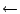

Behavior view editors manipulate various kind of diagrams to represent system or object behavior.
TSTD follows the notational convention of Mealy machines. In short, a Mealy machine is a finite state machine in which each transition can have one or more actions. See figure 5.1 for the shapes and subjects.
There are tree kinds of nodes: initial states, (normal) states and decision points. All nodes should have mutually unique names. Nameless states, also called transitory states, are not permitted. Non-deterministic state transition diagrams are permitted.
An initial state can have one or more initialization actions. You can add an action by selecting the initial state, and click on or near the arrow on top of the box. When an edit cursor appears at the right side of the arrow, you can type in the actions. Each line of text will be considered as a separate action. If you stop editing, the actions will be placed at the right side of the arrow and the texts become left aligned. The arrow will be resized to accommodate the height of the texts and on top of the actions a horizontal separator line will be drawn. Only when the initial state has actions then the separator line is drawn. Note that these actions are in this notational convention part of the initial state node, whereas the other actions (and events) of a diagram are as a notational convention part of an edge.
If you click for editing a bit above the separator line, an edit cursor appears and you can enter an event string. When you stop editing, the event string will be positioned above the separator line and the separator line will be resized, if necessary.
If you click for editing a bit below the separator, an edit cursor appears there and you can enter a list of actions. Each line of text will become a separate action. If you stop editing, the actions will become left aligned and, if necessary, the separator line will be resized. When the transition line segment is horizontal and the separator is positioned above the segment, all labels are moved up so that they are all positioned above the line. See figure 5.3 for an example diagram with actions and events.
It is possible to drag the separator line together with the event and action labels. There are two different sorts of movements possible. You are advised to experiment with this. These movements are:
The automatic positioning of labels looks best when the segments are horizontal or vertical. When the transition arrow segments are diagonal or curved, then label positioning still works but sometimes the result does not look as great as figure 5.3.
TSTD checks the following constraints that are summarized in figure 5.4.
An activity diagram is a special case of a state diagram in which most states are action states or subactivity states, and most transitions are completion transitions. The purpose of an activity diagram is to focus on flows driven by internal processing (as opposed to external events). See figure 5.5 for the shapes and subjects.
There are four kinds of nodes: start and end states, (active and wait) states, decisions and synchronizations. Nameless states and non-deterministic activity diagrams are not permitted.
A decision, represented by a small diamond, can be used as a decision point (one incoming arrow and two or more outgoing arrows), as a merge point (two or more incoming arrows and one outgoing arrow), or as a combined merge/decision point. See figure 5.6 for an example of decision and merge.
Synchronizations, represented by horizontal or vertical synchronization bars, should have one incoming and two or more outgoing control flows or two or more incoming flows and one outgoing flow. Via the Update Node Shape Type option in the edit menu it is possible to convert between these two synchronization representations.
See figure 5.7 for an example diagram with horizontal synchronization bars.
TATD checks the following constraints that are summarized in figure 5.8.
TPSD is a bit different from the other existing TCM diagram editors because in TPSD the layout (representation) is significant for the meaning of the diagram. So TPSD has to make sure that there is always a one-one relationship between each node instance and its representing shape instance. Therefore, duplicate shapes cannot be made in TPSD. During editing, TPSD enforces that the graph is a set of undirected trees. It has the constraint that an edge can only be added to the graph when the resulting graph would not contain a cycle. This constraint is also implemented for the tree editors (chapter 8).
In TPSD, the highest box in the drawing area represents the root of the tree, which is called the main root. This is the process node whose representing box has the smallest y-coordinate. The main tree is the tree that is connected to the main root.
Each process node has a set of children that is ordered from left to right. The ordering of the children is determined by the position of the shapes in the drawing area 5.1.
The Update Sequence Labels commands in a submenu of the TPSD View menu make it possible to show the process sequence numbers in the lower right corners of the boxes. The show no sequence labels command makes all the sequence numbers invisible. The update action sequences command draws the sequence numbers of all actions. Actions are the leaf nodes of the tree, excluding the ``quit'' boxes. See figure 5.11 for a PSD with numbered actions. The update process sequences command draws sequence numbers in all process nodes. Each parent receives a sequence number that is one higher than the highest number amongst its children. Note that the sequence numbers are not updated automatically when you edit the diagram. The labels are only recalculated and updated when you perform an update sequence labels command again. However, when you save the PSD to file, updating sequence labels is called implicitly.
The Check Diagram command in the Diagram menu checks that the tree is a syntactically correct JSD process structure diagram. Because of the immediately enforced constraints, Check Diagram assumes that there are no duplicate nodes and no cycles. In figure 5.12 all immediately and soft constraints are summarized.
Note that, if the box of a child has a smaller y-coordinate (is higher) than its parent, then a warning is given because that is an indication of a poor layout.
See figure 5.13 for the TRPG shapes and subjects. There are two node types and three node shape types. Process graph roots have their name label written on top of a downwards pointing arrow. In general the process graph roots are named after the process graph document, but in upper case letters. By default a process graph is named UNTITLED. Process graph nodes have two node shape representations. They can be small unnamed circles or larger rounded boxes which can contain a name label. Process graph nodes are connected by event edges. See figure 5.14 for an example recursive process graph.
TRPG checks the immediately enforced and soft constraints that are summarized in figure 5.15.
Collaboration diagrams describe the interactions among classes and associations. These interactions are modeled as exchanges of messages between classes through their associations. See figure 5.16 for the shapes and subjects.
Interactions are drawn as any other line type in TCM. In addition to the standard line types, interactions also have an arbitrary number of message labels located at the opposite side of the name area of the link.
On creation of an interaction an initial dummy message will be created, consisting of a
default message text ("edit this") followed by a message arrow.
See figure 5.17 for an example of a default interaction.
The order of the interaction may be described with a sequence of numbers, usually starting with number 1.
The message text can be edited as usual. The message direction can be changed either by:
>' : Add message direction from "left shape" towards "right shape".
<' : Add message direction from "right shape" towards "left shape".
^' : Add message direction from "upper shape" towards "down shape".
v' : Add message direction from "down shape" towards "upper shape".
In this way message directions can be added easy without having to switch
between keyboard and mouse alternately.
E.g. adding two messages to an interaction:
"1.2: create() > [CR] 1.3: respond() <"
will result in:
1.2: create()

1.3: respond()

TCBD checks the immediately enforced and soft constraints that are summarized in figure 5.18.
Statechart diagrams describe all the possible states a particular object can get into and how the object's state changes as a result of events that reach the object.
In contrast to most editors, TSCD starts in the hierarchical document mode. To select a node, click near any visible part in the node, for example on the inner side of the border.
See figure 5.19 for the shapes and subjects.
Drawing an and-state requires special attention. An and-state is divided into substates by dashed lines. You can draw and lines using the middle mouse button, like you would draw edges between different nodes. TSCD includes a feature that automatically adds intermediary points to the and line5.2 Unfortunately, TSCD is not able to move or resize the and line with its intermediary points automatically when you move or resize the and-state node. To move an and-state, always also select the and lines. After resizing an and-state, you have to readjust the intermediary points in the and lines.
See figure 5.20 for an example diagram with an and-state.